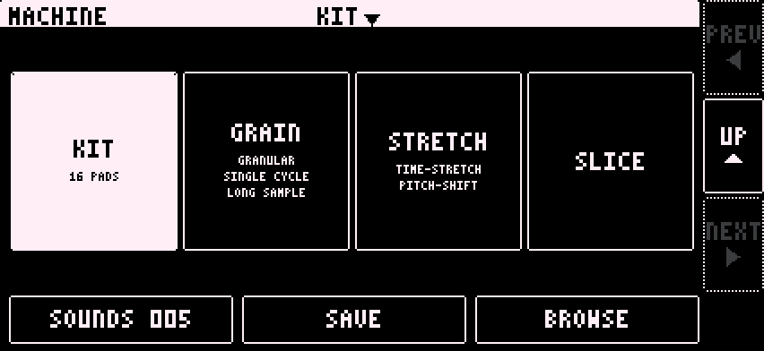

Changes
0.2 (13)
Changes
- Every knob is a solid disc with a pointer. DIAL VALUES ON on the OTHER page shows its value, 0 to 100, inside it.
- The navigation column, PREV, UP and NEXT, is on every page. UP is no longer at the top left.
- Each part tile on the main page shows its sound number.
- SOUNDS: two columns, eight slots to a page. The slot number is the save button, and it asks SURE? on a filled slot. Tap the name to load.
- Sampler: the machine name is centred in the header and opens the machine picker. GRAIN has the six-dial box (VOLUME, ATTACK, DECAY, BITS, RATE, DRIVE) and the modes GRANULAR, SINGLE CYCLE and LONG SAMPLE. SLICE has ENV RESET on its filter and no MODE page.
- HEAT: the DJ EQ has full-size knobs and a RESET. The LOOPER SPACE knobs match the rest.
- HOLY_ACID has a WAVE selector with 64 waves.
0.2
Note: this version is a fresh start. Projects, sounds and settings from the first beta do not carry over.
New
- SAMPLER engine with four machines: KIT (16 pads), GRAIN, STRETCH and SLICE. It replaces GRANULAR, which lives on as GRAIN.
- Lo-fi models for the sampler: SP, S950 and CRUSH.
- The sample browser loads samples from your phone, your recordings, or straight from the Digitakt.
- Skins: seven colourways in the settings.
- A welcome message on first launch.
- HOLY_DISK, the app's own sample disk, with a two-pane browser, zip files and Open in Holy Grail. See Samples.
- PUMP: sidechain-style ducking on the mixer, in time with your Digitakt.
- COMP: a master bus compressor.
- A needle meter for every mixer input.

Seven skins recolour every screen; pick one in the settings.
You told us, we did it
- "Letters are cut off", "the Dynamic Island blocks stuff". The app now scales to fit every iPhone, clear of the rounded corners and the notch.
- "The interface needs common ways to navigate", "how do I get back from browse?" Every page has a navigation column at the right: PREV and NEXT turn the page and UP goes up a level. No more swiping.
- "CC mapping is lost when loading presets." Your CCs now belong to the project. Loading a sound never changes them.
- "It keeps listening to the microphone." It doesn't. The iPhone treats the Digitakt's USB audio as a microphone, so the app asks for microphone access the first time you connect it. The phone's own microphone is never used, unless you disconnect the USB and turn MIC on in the app.
- "The amp envelope on Synth One seems broken." It was. Synth One misread how the Digitakt ends a note, so notes never released. Fixed.
- "Synth One's OSC selectors miss my taps." Fixed.
- "The knob needle turns the wrong way past halfway." Fixed.
- "Can the knobs show their values?" Yes. Turn on knob values in the settings.
- "The looped Digitakt audio is really quiet." The input and looper levels are reworked. The Digitakt now loops at the level it plays.
- "Is there a manual?" You're reading it. The Digitakt II is confirmed working.
One layout on every screen, scaled as large as it fits and kept clear of the notch and the Dynamic Island.
Other changes and fixes
- Volume and gain staging improvements.
- Changing a part's engine resets its CCs to that engine's defaults. Presets no longer store CCs.
- Resetting the looper with a C note no longer changes the divider.
- Redesigned screens: one header size, new SOUNDS and BROWSE, a CC number picker, editable part channels.
- The master volume now starts at the right level.
- TB-303 is now HOLY_ACID, with a second filter, CCCP, and a third oscillator, WAVE.
- The looper has its own channel on the mixer.
- The mixer opens from the MIXER box on the main page.
- HEAT fits on one page.
- On channel 16, CC 70 to 73 set the four synth volumes and CC 74 to 77 the HEAT EQ.
- Some Synth One settings were lost on a pattern change or a restart. Fixed.
Coming next
Plans, not promises:
- A limiter on each channel.
- Granular effects.
- We are considering a separate design for the iPad.